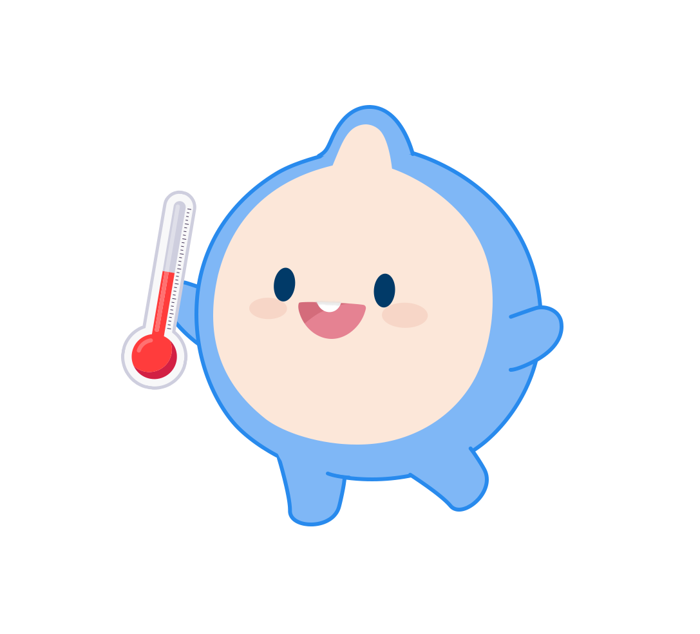

제출물은 저작권·라이선스 기준을 지켜야 합니다. 문제가 확인되면 규정에 따라 단계적으로 제재(소명 절차 포함)될 수 있으니 기준을 확인하세요. 만들 때 배점을 함께 고려하면 방향을 잡기 쉽습니다.

Copyright
제출물은 팀 간·외부 출처 대비 표절 검증과 제공 계정의 개발 세션 확인을 거칩니다. AI 사용 자체는 문제되지 않으나, 다른 팀이나 외부 출처의 코드를 그대로 사용하는 것은 허용되지 않습니다.
AI로 코드를 생성했더라도 저작권·특허·보안에 대한 책임이 면제되지 않으며, 제출물에 대한 최종 책임은 참가자에게 있습니다.
| 항목 | 허용 ✓ | 주의 필요 ⚠ |
|---|---|---|
| AI 생성 코드 | Claude Code로 생성한 코드 사용 OK | 다른 팀과 동일한 코드 그대로 제출 금지 |
| 오픈소스 라이브러리 | MIT, Apache 2.0 등 상업적 허용 라이선스 | GPL 계열은 활용 범위에 제약이 있을 수 있음. README 명시 필요 |
| 이미지·아이콘 | CC0, Unsplash, 직접 제작 | 출처 불명 이미지, 유료 스톡 무단 사용 금지 |
| 폰트 | Google Fonts, Pretendard, Noto Sans 등 무료 폰트 | 상업용 폰트 무단 사용 금지. 라이선스 README 명시 |
| 데이터 | 공공데이터포털(data.go.kr) 공개 API | 원출처 표기 필수 |
사용한 외부 리소스 목록(라이브러리명·버전·라이선스) / 이미지·폰트 출처 / 기상청 데이터 출처 표기.
Security
API 키를 비롯한 모든 비밀값(키·토큰·인증 정보 등)은 코드에 노출되지 않도록 다뤄야 합니다. 기상청 API 키뿐 아니라 외부 서비스에서 발급받은 어떤 키라도 마찬가지입니다. GitHub에 올라간 코드와 배포된 웹페이지는 누구나 열어볼 수 있어, 노출된 키는 도용·과금 사고로 이어질 수 있습니다. API 키가 노출되면 실격 처리되므로, 키가 필요 없는 공개 데이터·API를 우선 사용하고 키가 꼭 필요하면 코드가 아닌 환경변수에 두도록 설계하세요.
다음과 같은 노출에 유의하세요.
Scoring
배점이 클수록 게이지가 "뜨겁게" 찹니다. 실현 가능성과 체험형 설계의 비중이 가장 큽니다.